Concept before decoration.
NYT Magazine, Coverjunkie, and Eye establish the cover rule: one governing idea survives at thumbnail size; the issue system supplies continuity.
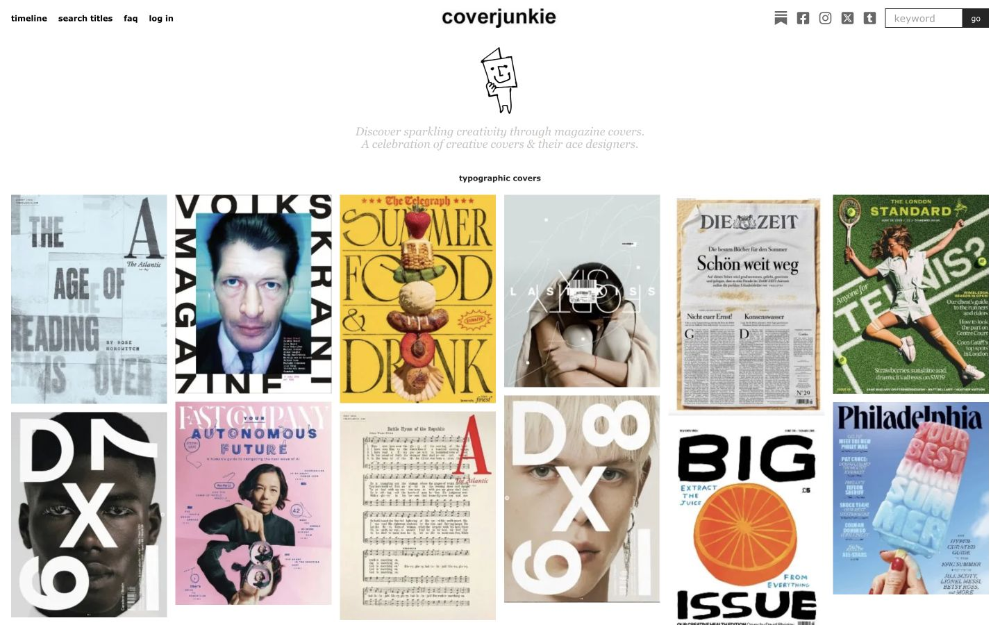
Coverjunkie · typographic covers
Type can become the image, crop, collide, or carry the whole concept. The useful commonality is decisive hierarchy—not a shared style.
The official section could not be captured. Design-press interviews and retrospectives preserve the core lesson: choose the visual method after the editorial proposition.
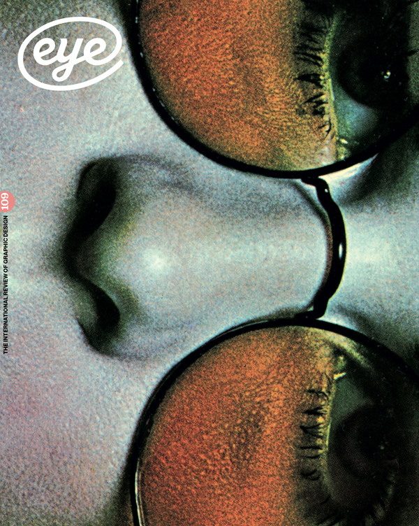
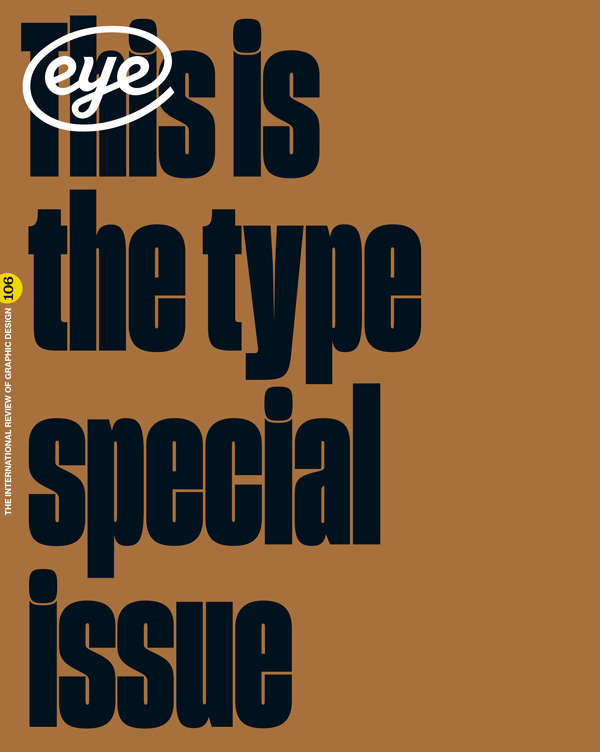
Eye · system plus surprise
A stable logo and issue frame make room for radically different cover concepts.
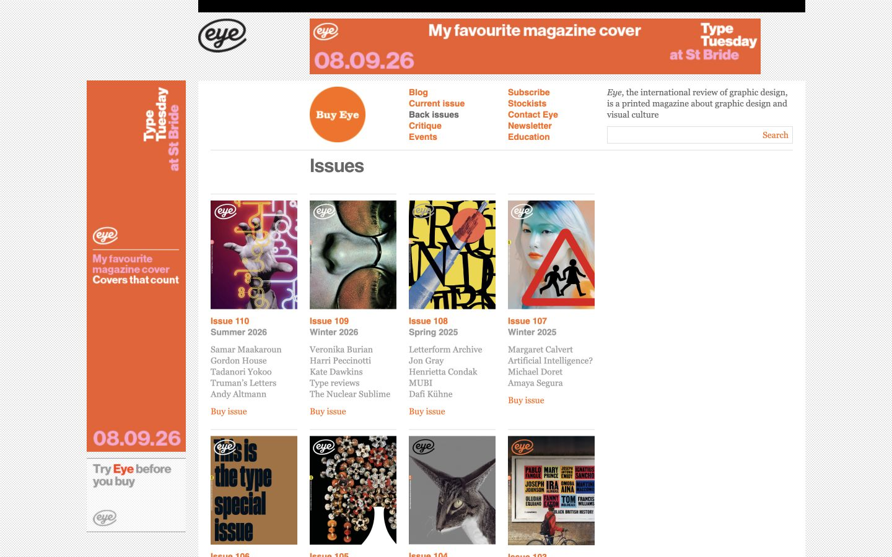
Issue identity as infrastructure
The archive makes continuity visible without forcing the same composition on every issue.
Air and density belong together.
The Gentlewoman and POPEYE prevent a false choice between minimalism and information. A publication needs both speeds.
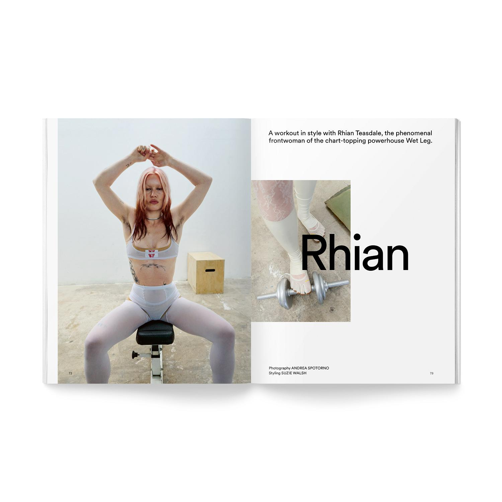
The Gentlewoman · asymmetric authority
Image mass, white field, one display word, and quiet credits. Restraint works because the subject carries the page.
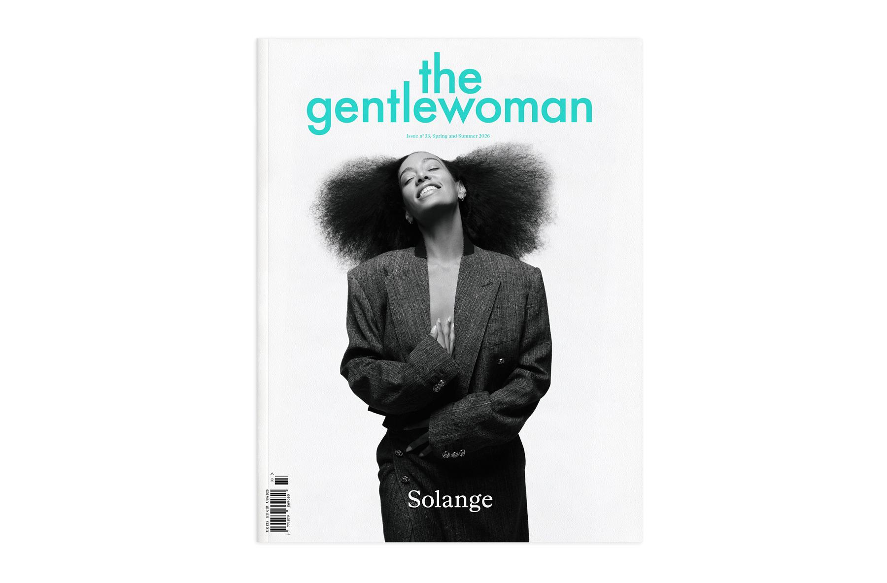
Portrait first
The cover labels the subject and gets out of the way. Confidence replaces cover-line clutter.
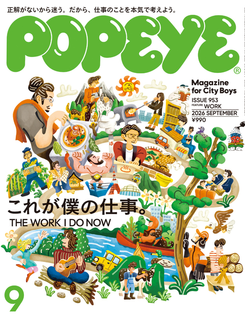
POPEYE · authored abundance
Illustration, masthead, multiple languages, issue data, and a direct theme coexist because their order is unambiguous.
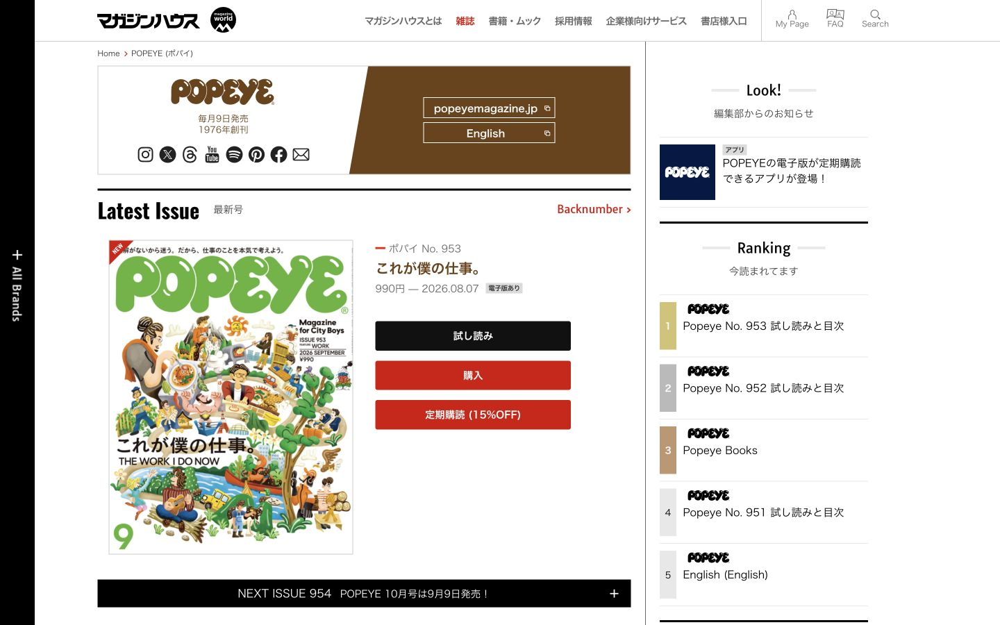
Catalog density can still feel editorial
Numbers, prices, dates, ranks, and buttons do not dilute the publication when the grid and typography stay disciplined.
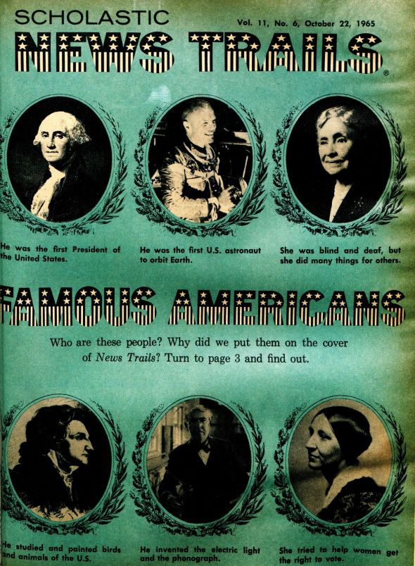
Scholastic · direct editorial address
Readers should recognize the topic, issue, and invitation immediately. Condensed display energy is useful when it serves that task.
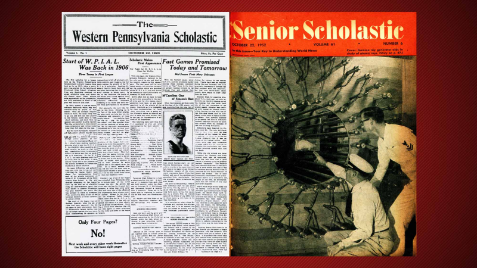
A century, not one style
The transferable principle is pace and legibility—not faux-aged paper or schoolhouse nostalgia.
The book metaphor must be earned.
Stripe Press makes the object's material evidence readable. The current site needs the same agreement between pose, edge, thickness, shadow, and motion.
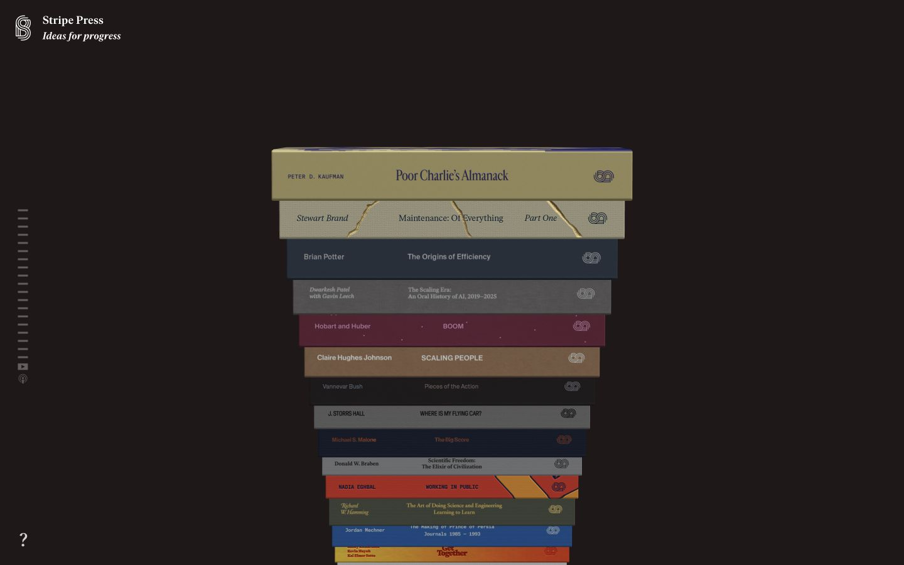
Stripe Press · readable material
Spines, edges, scale, and weight establish a collection before interaction begins. The equivalent resting pose for this site must show more than a rotated cover plane.
Translate the judgment, not the costume.
mymind and Jim Bang show two compatible digital lessons: type can act like cover art, and metadata can make a portfolio readable without explanatory prose.
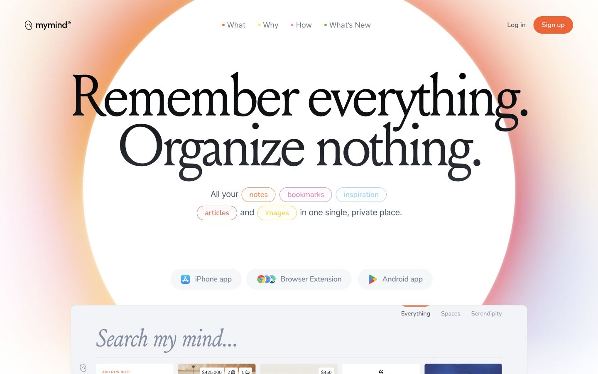
mymind · conceptual display scale
Borrow the confidence of the headline and the brevity of the promise. Do not borrow the gradient or product-UI styling.
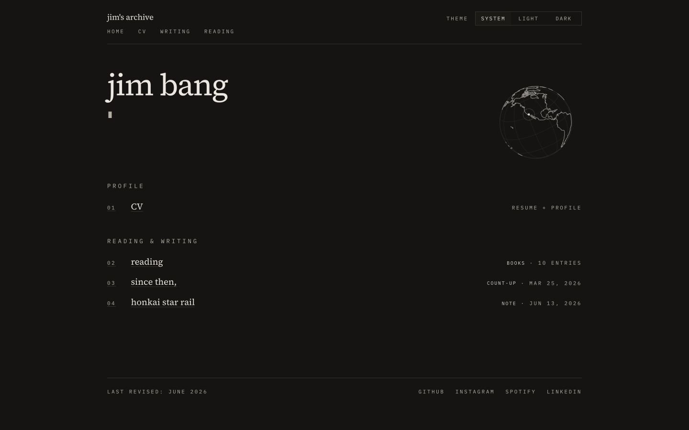
Jim Bang · the archive is the interface
Numbered rows, tiny dates, restrained labels, and almost no onboarding copy make the information architecture visible.
Where each reference belongs.
A reference only helps when it has a defined job. These mappings prevent the moodboard from becoming an aesthetic soup.
| Cover | NYT Magazine + Coverjunkie + Eye: one concept, stable issue identity, minimal subordinate lines. |
|---|---|
| Contents / library | POPEYE + Eye + Jim Bang: deliberate density, strong numbering, visible metadata, exact scan order. |
| Letter / profile | The Gentlewoman: real photography, asymmetry across the gutter, quiet captioning, earned white space. |
| Projects / resume | Scholastic + POPEYE + Jim Bang: direct section hierarchy, evidence-led rows, clear dates, minimal explanation. |
| Book pose | Stripe Press: readable spine, edge, thickness, coherent light, and a continuous move into the flat reading pose. |
| Motion / copy | mymind + Jim Bang: large conceptual statements, short support copy, one meaningful interaction per spread. |
What the research actually requires.
These are the audit criteria. A visual flourish that contradicts them is not supported by the reference set.
- Every spread has a distinct editorial role.
- The cover has one idea that survives at thumbnail size.
- Folios and issue metadata form a consistent navigation system.
- Density is allowed; clutter is not.
- Empty space must give something authority.
- The book looks physical before it moves.
- Motion reveals cause, hierarchy, or state.
- Source artwork never ships in the public site.